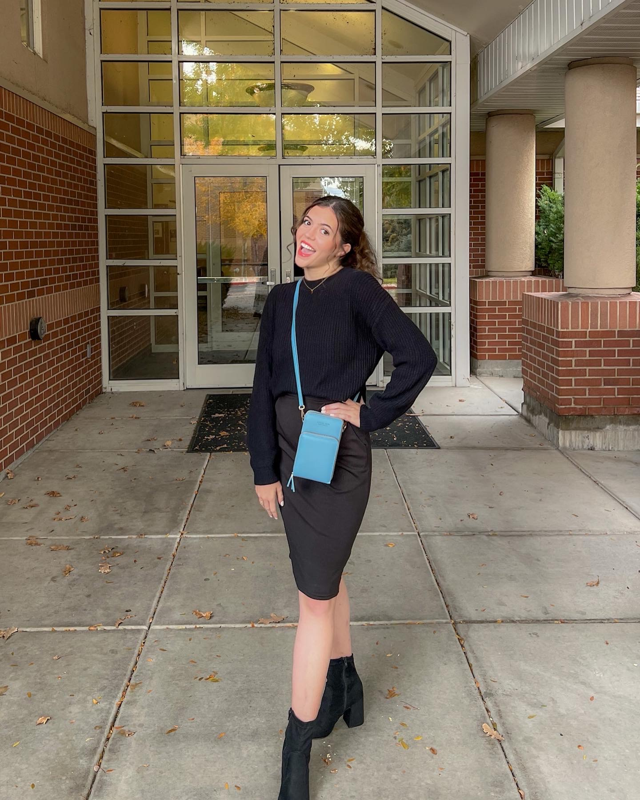

Hi! I'm Elley!
My name is Elley, and I am a unique daughter of God. I grew up in a small town, called Price, UT. I was involved in everything under the sun: ballet school, varsity soccer and swim, local government, musicals, choir, business clubs, science fair, and so much more.
After graduating high school, I went to college for a year and then decided to take a break to serve a mission for my church. So I moved to Texas for about a year and a half to talk about Jesus!
